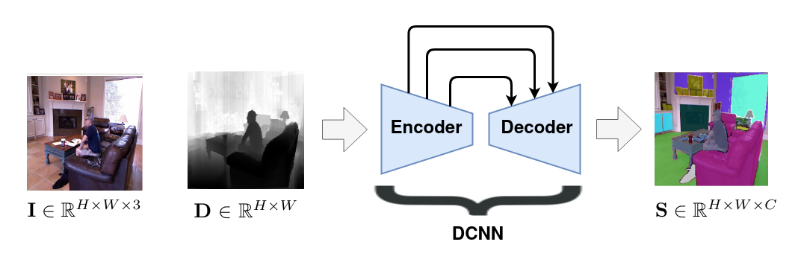
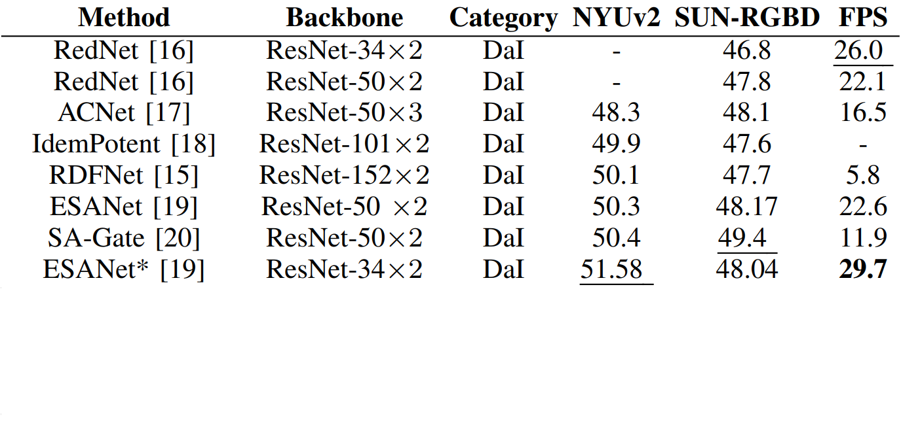

Review on Indoor RGB-D Semantic Segmentation with Deep Convolutional Neural Networks ( DCNN )
Sami BARCHID José MENNESSON Chaabane DJÉRABA

Objective
- Condensed introduction to the field of RGBD semantic segmentation
- Discusses the challenges encountered in the current state-of-the-art (SOTA)
- Presents the promising perspectives of the field for future research works
Formulation
Formulation
Formulation

Formulation
Formulation
Formulation
Formulation
Overview of current models
- No established method to perfectly exploit RGB and Depth data together
- Models vary depending on how the depth features are incorporated into the DCNN
- Three strategies found
Depth as Input ( DaI ) [Seichter2020]
- Most popular
- Duplicated parts
- Increased computational and memory complexity
Depth as Operation ( DaO ) [Wang2018]

- Operation modified w.r.t. depth map
- No duplicated parts
- Reduced complexity
- Adapted to low-cost indoor devices
Depth as Prediction ( DaP ) [Jiao2019]

- Depth only during training
- Predicts segmentation AND depth map
- Enable the use of cheaper RGB cameras
Existing Datasets
Existing Datasets
Existing Datasets
Existing Datasets

Existing Datasets
Existing Datasets
Existing Datasets
Existing Datasets
Existing Datasets
Existing Datasets
Existing Datasets
Performance Analysis
Performance Analysis
Performance Analysis
Performance Analysis
Performance Analysis
Performance Analysis
Performance Analysis
Performance Analysis
Performance Analysis
Performance Analysis
Performance Analysis
Performance Analysis
Performance Analysis
Challenges
- SOTA models are not adapted to edge devices.
- Performance are still evaluated on older and smaller datasets (NYUv2, SUN-RGBD)
- DaI strategy still remains the way-to-go despite its drawbacks
Perspectives
- Future works should evaluate their performance on recent and larger datasets (2D-3D-S, Matterport3D)
- Focusing on DaP and DaO strategies to fully exploit their advantages
- Models based on lightweight backbone networks would enable the use of low-cost devices for indoor applications
Thanks!
References
- [Wang2018]: Wang et al. “Depth-aware cnn for rgb-d segmentation,” in Proceedings of the European Conference on Computer Vision (ECCV), 2018, pp. 135–150.
- [Seichter2020]: Seichter et al. “Efficient rgb-d semantic segmentation for indoor scene analysis,” arXiv preprint arXiv:2011.06961, 2020.
- [Wang2018]: Wang et al. “Depth-aware cnn for rgb-d segmentation,” in Proceedings of the European Conference on Computer Vision (ECCV), 2018, pp. 135–150.
- [Jiao2019]: Jiao et al. “Geometry-aware distillation for indoor semantic segmentation,” in Proceedings of the IEEE Conference on Computer Vision and Pattern Recognition, 2019, pp. 2869–2878.
- [Silberman2012]: Silberman et al. “Indoor segmentation and support inference from rgbd images,” in European conference on computer vision. Springer, 2012, pp. 746–760.
- [Song2015]: Song et al. “Sun rgb-d: A rgb-d scene understanding benchmark suite,” in Proceedings of the IEEE conference on computer vision and pattern recognition, 2015, pp. 567–576.
- [Armeni2017]: Armeni et al. “Joint 2d-3d-semantic data for indoor scene understanding,” arXiv preprint arXiv:1702.01105, 2017.
- [Chang2017]: Chang et al. “Matterport3d: Learning from rgb-d data in indoor environments,” arXiv preprint arXiv:1709.06158, 2017.
- [McCormac2016]: McCormac et al. “Scenenet rgb-d: 5m photorealistic images of synthetic indoor trajectories with ground truth,” arXiv preprint arXiv:1612.05079, 2016.